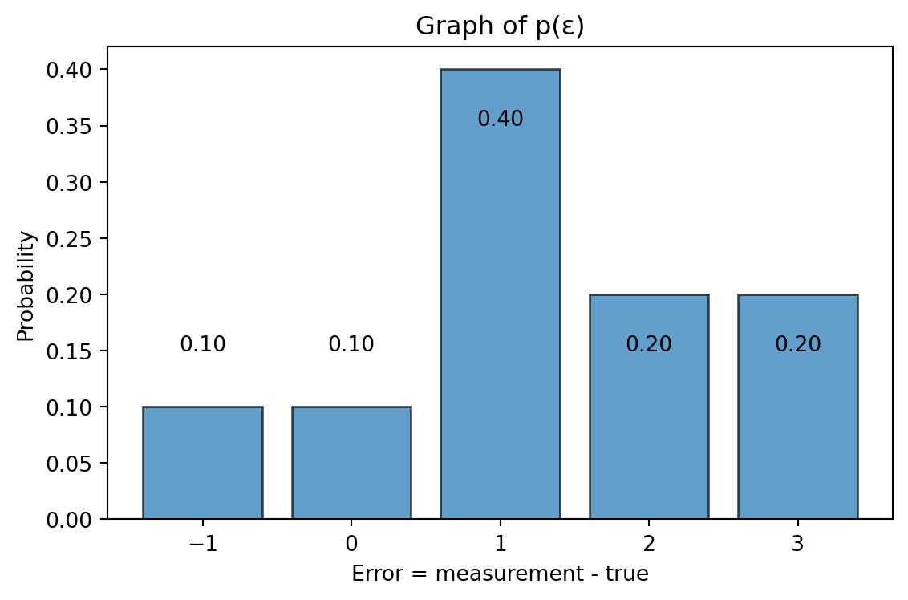
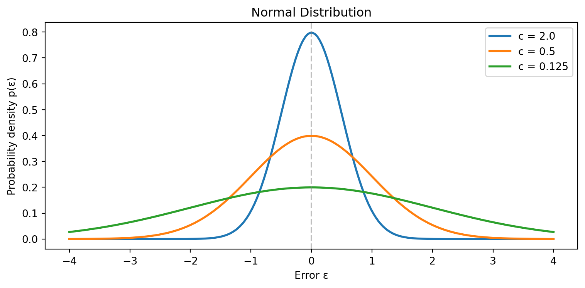
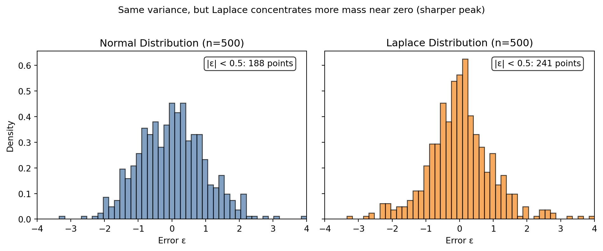

Day 3 - Maximum Likelihood Estimation
Canada/USA Mathcamp 2026
So far we have created estimates from data without making any assumptions. However, we needed to be a choice of the norm on the residuals to define the best estimate. This method was discovered independently by Gauss and Legendre in the early 1800s.
However, Gauss went further. He realized that there is a further connection between the choice of norm and the distribution of errors. This was a profound insight that connected the method of least squares to probability theory and created the field of statistics and data science as we know it today. Let’s explore this connection through a motivating example.
Motivating Example: The Unreliable Scale
Suppose you want to weigh yourself on a scale that only shows integer weights.
Single measurement
You weigh yourself once and the scale reads 100 lbs. What would be the best estimate of your weight? With no other information you can only assume that your weight is 100 lbs.
But now suppose through careful testing, you’ve figured out that the scale is biased and the residual errors have the following distribution. Now what is your best estimate after only one observation?
The most likely value of the error on your scale is +1. So, since it reads 100 lbs your weight is most likely to be 99 lbs. Thus knowing the probability distribution of errors allows us to improve our estimate. Notice that this introduces a residual \epsilon = 1 which is higher than the residual you would have if you had estimated your weight to be 100 lbs.
Three Measurements
Suppose you made three measurements: 100, 102, 99. If we have no other information about the weight then we can choose between mean, median, or midrange depending upon what we want to minimize.
But we can make a more informed measurement based on the known error distribution. The first observation tells us that the true weight should be between 97 and 101. The second observation tells us that the true weight should be between 99 and 103. The third observation tells us that the true weight should be between 96 and 100. So, the only possible values of the true weight are 99 and 100. Which one is more likely?
In the table below, p(\vec{\epsilon}) = p(\epsilon_1) \cdot p(\epsilon_2) \cdot p(\epsilon_3) is the joint probability of all three errors, assuming the errors are independent.
| True value? | \epsilon_1 | p(\epsilon_1) | \epsilon_2 | p(\epsilon_2) | \epsilon_3 | p(\epsilon_3) | p(\vec{\epsilon}) |
|---|---|---|---|---|---|---|---|
| 99 | +1 | 0.4 | +3 | 0.2 | 0 | 0.1 | 0.008 |
| 100 | 0 | 0.1 | +2 | 0.2 | -1 | 0.1 | 0.002 |
The likelihood that your weight equals 99 lbs is 0.008 and the likelihood that your weight equals 100 lbs is 0.002. So we’ll say that 99 lbs is the most likely estimate.
This might seem counterintuitive. After all, we often hear that averaging measurements gives the best estimate. But that advice assumes something specific about how errors behave. With our asymmetric scale, the mean (= (100 + 102 + 99)/3 = 100.33) isn’t optimal.
TipThe key insight
The “best” estimate depends on what we know (or assume) about the error distribution. Different error distributions lead to different optimal estimates.
This led Gauss to thinking about the question: What error distribution would make the mean the optimal estimate?
Likelihood and Maximum Likelihood Estimation
Let’s formalize what we did in the scale example.
The Likelihood Function
Given:
- A set of independent observations g_1, g_2, \ldots, g_n
- A hypothesized true value g
- A known error distribution p(\epsilon).
The likelihood of g is the probability of observing our data if g were the true value:
L(g) = \prod_{i=1}^{n} p(\epsilon_i) = \prod_{i=1}^{n} p(g_i - g) \tag{1}
Here \epsilon_i = g_i - g is the error that would be needed for observation i if the true value were g.
TipLikelihood vs Probability
These are related but subtly different:
Probability: Fix the true value, ask about possible observations
“If my weight is 100 lbs, what’s the probability of seeing 102 on the scale?”Likelihood: Fix the observations, ask about possible true values
“I saw 102 on the scale. How likely is it that my true weight is 100 lbs?”
Mathematically they use the same formula, but the interpretation differs.
Maximum Likelihood Estimation (MLE)
The maximum likelihood estimate (MLE) is the value of g that maximizes the likelihood function:
\hat{g}_{\text{MLE}} = \arg\max_{g} L(g).
In words: the MLE is the true value that makes our observed data most probable.
NoteExercise 1: Coin flips
You have a coin that you suspect is biased. You want to estimate the probability q of getting heads. You flip the coin 10 times and observe “HHHHHHHTTT” (7 heads and 3 tails).
- What is your naive estimate of q?
- Write down the likelihood function L(q) for this data i.e. write down the probability of observing this data as a function of q.
- Find the value of q that maximizes L(q). This is your MLE for \hat{q}_{\text{MLE}}.
- How does \hat{q}_{\text{MLE}} compare to your naive estimate?
TipHistorical Note: MLE
MLE was discovered by Gauss in 1809 and later formalized by Fisher in 1922. Today, it is one of the most widely used methods for estimating parameters in statistics and machine learning. It has many nice properties, including consistency (it converges to the true value as the number of observations increases) and efficiency (it achieves the lowest possible variance among unbiased estimators under certain conditions).
Because MLE requires us to know distribution of errors, there is a lot of research on how to estimate the error distribution from data, and how to make MLE robust to deviations from the assumed distribution.
Statisticians work on two parallel tracks: (1) developing new methods for estimating parameters, and (2) developing new methods for estimating error distributions.
We saw an example of working with discrete probability distributions, but the same ideas apply to continuous distributions as well. In fact, continuous distributions are often more realistic for modeling errors. The method of computing MLE then is to write an algebraic expression for the likelihood function as a product Equation 1, and then maximize it with respect to the unknown parameter g by taking derivatives and setting them to zero. However this will require us to apply repeated product rules which can be cumbersome. To make maximization easier, we use a standard trick.
Log-Likelihood
\log is a monotonically increasing function, so maximizing the likelihood is equivalent to maximizing the log-likelihood:
\ell(g) = \log L(g) = \sum_{i=1}^{n} \log p(\epsilon_i) = \sum_{i=1}^{n} \log p(g_i - g) \tag{2}
The Normal Distribution
Gauss combined the idea of MLE along with his method of least squares to derive the normal distribution. In this section, we will go in the other direction: we will assume that the errors are normally distributed and show that the MLE is the mean of the observations. You’ll then work backwards to show that if the MLE is the mean, then the errors must be normally distributed. This great insight of Gauss cemented the normal distribution as the canonical error distribution in statistics.
A Symmetric Error Model
Let’s consider a different, more realistic error model. Suppose measurement errors follow the bell curve centered at the origin, also called the normal (Gaussian) distribution:
p(\epsilon) = A \exp\left(-c\epsilon^2\right) \tag{3}
Here c > 0 is a constant that controls the spread of the distribution (equals 1/(2 * variance)), and A > 0 is a normalization constant that ensures the total probability integrates to 1.1
This distribution is centered our the origin (most likely error is zero), is symmetric (positive and negative errors are equally likely), small errors are more likely than large errors, and the probability of an error decreases exponentially with the square of the error.

MLE with Normal Errors
What happens when we apply maximum likelihood estimation assuming normally distributed errors? Suppose we have n independent observations g_1, g_2, \ldots, g_n and we hypothesize that the true value is g. The errors are \epsilon_i = g_i - g which we assume are normally distributed. The likelihood of g is:
L(g) = \prod_{i=1}^n A \exp\left(-c\epsilon_i^2\right) = A^n \exp\left(-c\sum_{i=1}^n (g_i - g)^2\right)
The log-likelihood is: \ell(g) = \log L(g) = n\log A - c\sum_{i=1}^n (g_i - g)^2
The first term doesn’t depend on g, so maximizing \ell(g) is equivalent to maximizing:
- c\sum_{i=1}^n (g_i - g)^2
Since c > 0, this is equivalent to minimizing:
\sum_{i=1}^n (g_i - g)^2
This is the sum of squared errors — exactly what we minimize in Ordinary Least Squares (OLS)!
Summary So Far
We’ve established a crucial chain of reasoning:
\boxed{\text{Normal errors}} \implies \boxed{\text{MLE minimizes } \sum(g_i - g)^2} \implies \boxed{\text{MLE} = \text{Mean}}
This raises a natural question: is the normal distribution necessary, or just sufficient? Gauss showed it’s both.
\boxed{\text{Mean is optimal}} \implies \boxed{???} \implies \boxed{\text{Errors must be } ???}
Gauss’ Reverse Derivation
Gauss’ brilliant insight was to work backwards. He started with the conclusion (the mean is the best estimator) and asked what assumptions would justify it.
Here’s the logical structure of his argument:
- Assume the mean is the MLE for any dataset
- Derive what constraint this places on the error distribution
- Solve for the unique distribution satisfying this constraint
- Conclude that errors must be normally distributed
The following exercises walk you through Gauss’ derivation step by step. We want to maximize \ell(g) from Equation 2 with respect to g. To do this, we take the derivative of \ell with respect to g and set it equal to zero:
\begin{aligned} \frac{d\ell}{dg} = \sum_{i=1}^n \frac{d \log p(g_i - g)}{dg} &= 0 \\ \sum_{i=1}^n \frac{d \log p(\epsilon_i)}{dg} &= 0. \end{aligned}
Using chain rule, we can write this as:
\begin{aligned} \sum_{i=1}^n \frac{d \log p(\epsilon_i)}{d\epsilon_i} \frac{d\epsilon_i}{dg} &= 0 \\ \implies \sum_{i=1}^n \frac{d \log p(\epsilon_i)}{d\epsilon_i} (-1) &= 0 && \text{ as } \epsilon_i = g_i - g\\ \sum_{i=1}^n \frac{d \log p(\epsilon_i)}{d\epsilon_i} &= 0 \end{aligned}
Denote \phi(\epsilon) = \frac{d \log p(\epsilon)}{d\epsilon}. This is called the score function. We can rewrite the maximum likelihood condition as:
\sum_{i=1}^n \phi(\epsilon_i) = \sum_{i=1}^n \phi(g_i - g) = 0. \tag{4}
The key insight of Gauss’ derivation is that this condition must hold for any set of observations g_1, \ldots, g_n for any number of observations n. This is a very strong constraint on the function \phi and hence on the error distribution p(\epsilon). The following exercises will show that this constraint uniquely determines the normal distribution.
NoteExercise 2: Symmetry
Now suppose n=2 i.e. we only have two observations g_1 and g_2. Assume that the MLE is the mean \bar{g} = \frac{g_1 + g_2}{2}. Using Equation 4 for n=2, show that this implies that the log-derivative \phi must be an odd function i.e.
\phi(-x) = -\phi(x)
for all x.
NoteExercise 4: Additivity
Now suppose n=3 i.e. we only have three observations g_1, g_2, g_3. Assume that the MLE is the mean \bar{g} = \frac{g_1 + g_2 + g_3}{3}.
(a) Show that g_3 - \bar{g} = -(g_1 - \bar{g}) - (g_2 - \bar{g}).
(b) Using Equation 4 for n=3, show that \phi(x + y) = \phi(x) + \phi(y) for all x, y.
NoteExercise 5: Linearity
Show that the only continuous functions \phi that satisfy the constraints from Exercises 3 and 4 are linear functions of the form:
\phi(x) = -c x
for some constant c. Note that we are using -c instead of c to match the standard form of the normal distribution in Equation 3.
NoteExercise 6: Deriving the Normal Distribution
In the previous exercise, you have shown that \frac{d \log p(\epsilon)}{d\epsilon} = -c\epsilon
Now we perform a calculus trick: integrate both sides with respect to \epsilon. Simplify to recover the normal distribution from Equation 3. You have now derived the normal distribution from the assumption that the MLE is the mean and achieved eternal glory.
Summary
Gauss’ argument is mathematically beautiful, but it’s not a proof that real-world errors are normal. It shows the logical equivalence between assuming the mean is optimal and assuming normal errors.
\boxed{\text{Normal errors}} \Leftrightarrow \boxed{\text{MLE minimizes } \sum \epsilon_i^2} \Leftrightarrow \boxed{\text{MLE} = \text{Mean}}
Statistics is not mathematics and there is no “correct answer” in the real world. In statistics, our goal is to find evidence to support a model, and then use that model to make predictions. The normal distribution is a convenient model for many real-world phenomena, but it is not the only one. In practice, you can make a histogram of the data to see whether it looks roughly normal.
NoteExercise 7: Fat tails
What should be the distribution of errors if the MLE is the median instead of the mean? This is called the Laplace distribution.
The figure below compares the normal and Laplace distributions. Both are centered at zero and have the same variance, but they differ in their tail behavior.

The Laplace distribution has a sharper peak — more errors are concentrated very close to zero. Since both distributions have the same variance, this means the remaining probability mass must be in the tails (even if we don’t see many tail points in a small sample). The median is the MLE for Laplace errors, just as the mean is the MLE for normal errors. The median is less sensitive to outliers, making it more robust when extreme errors occasionally occur.
Footnotes
This is the equation of the bell curve centered at the origin. The most general form of the normal distribution is p(\epsilon) = \dfrac{1}{\sqrt{2 \pi \sigma^2}} \exp\left(-\dfrac{(\epsilon - \mu)^2}{2\sigma^2}\right) where \mu is the mean and \sigma^2 is the variance. Here we are considering the special case where \mu = 0 and \sigma^2 = 1/(2c).↩︎